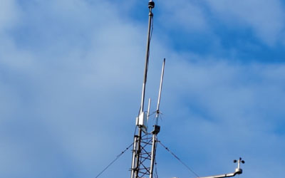
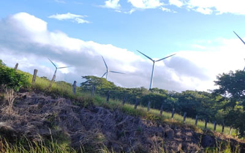
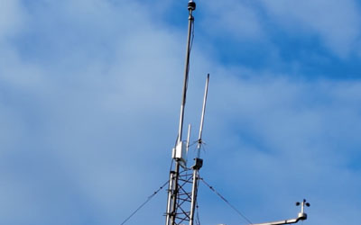
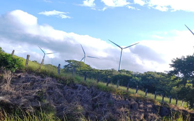
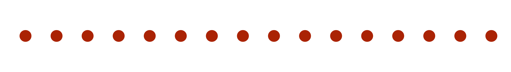
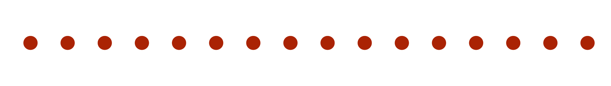

PROYECTO PLANTA EÓLICA MOVASA
 



Solución
tecnológica para la vigilancia de torres eólicas con
LoRaWAN
 

Las torres eólicas ubicadas en zonas remotas presentaban un gran desafío para su vigilancia. Cuando el viento no soplaba y las aspas se detenían, estas torres quedaban sin energía eléctrica y sin conectividad a través de GPRS o internet. Esto dificultaba enormemente el control de accesos y la supervisión de las instalaciones, dejándolas vulnerables

Para abordar este problema, implementamos una solución
innovadora y efectiva:
Un dispositivo LoRaWAN de control de apertura de puertas.
Específicamente, utilizamos el interruptor de contacto magnético
WS301 de Milesight.
Este dispositivo nos permite monitorear de forma remota el estado
de las puertas de las torres eólicas, ya sea abiertas o cerradas.
Lo mejor de todo es que esta funcionalidad se mantiene operativa
incluso cuando no hay energía eléctrica o conexión a internet
convencional, lo que garantiza una vigilancia constante y
confiable de las instalaciones.